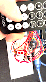
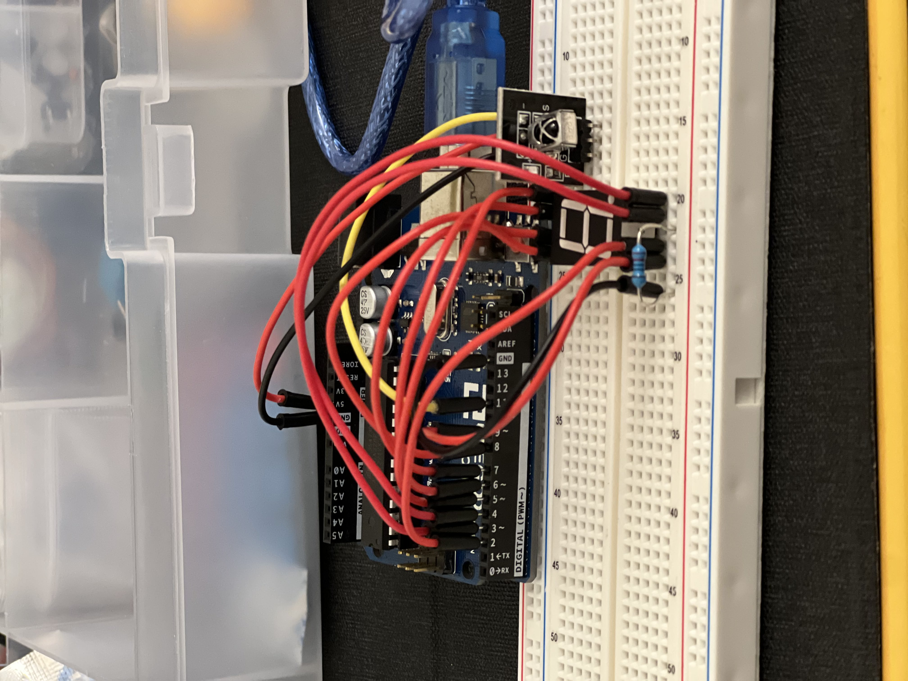
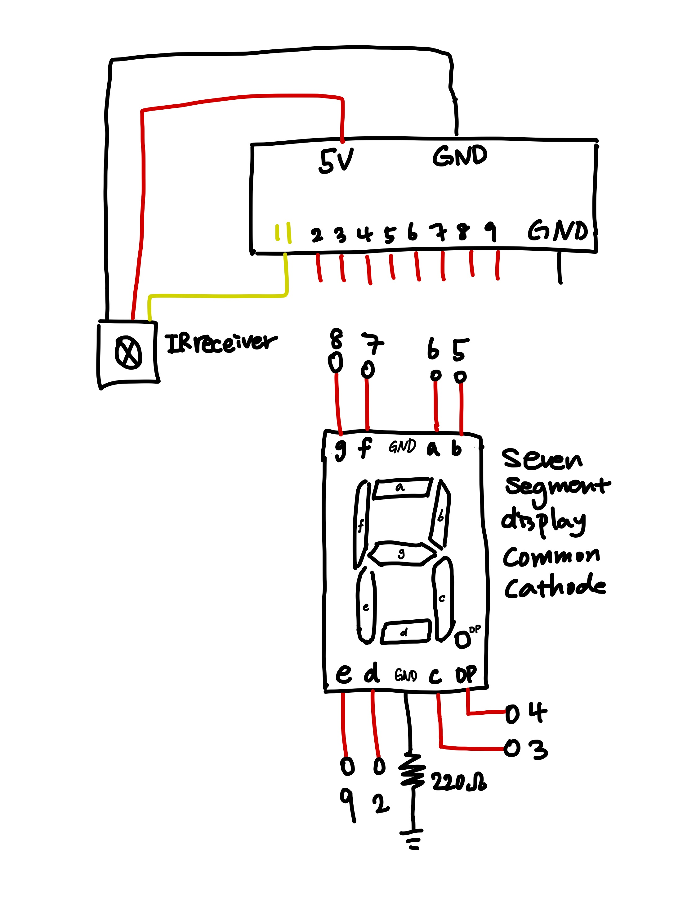

The IRreceiver is connected to a common cathode seven segment display. When a number button is pressed on the remote, the corresponding number is displayed.
I used a 220 ohm resistor so that even when only one of the segments is lit, it won't blow out.
V = IR
5V = I * 220 ohm
I = 23mA
#define DECODE_NEC // use NEC protocol for decoding received value from the IRreceiver.
#include // include IRremote library
#include // include SevenSegmentDisplay library
SevenSegmentDisplay display(6, 5, 3, 2, 9, 7, 8, 4, false); // initialize the seven segment display. Connect each segment to corresponding pins. False for common anode, because this is a common cathode display.
int IR_RECEIVE_PIN = 11; // IR receive pin will be at pin 11.
void setup() {
IrReceiver.begin(IR_RECEIVE_PIN, ENABLE_LED_FEEDBACK); // Start the receiver, enable feedback LED (this will be from pin 11)
}
void loop() {
if (IrReceiver.decode()) { // if the IRreceiver receives data, decode it.
IrReceiver.resume(); // enable receiving of the next value.
if (IrReceiver.decodedIRData.command == 0xC) { // if the received data has the command 0xC,
display.displayCharacter('1'); // display 1.
} else if (IrReceiver.decodedIRData.command == 0x18) { // if the received data has the command 0x18,
display.displayCharacter('2'); // display 2.
} else if (IrReceiver.decodedIRData.command == 0x5E) { // if the received data has the command 0x5E,
display.displayCharacter('3'); // display 3.
} else if (IrReceiver.decodedIRData.command == 0x8) { // if the received data has the command 0x8,
display.displayCharacter('4'); // display 4.
} else if (IrReceiver.decodedIRData.command == 0x1C) { // if the received data has the command 0x1C,
display.displayCharacter('5'); // display 5.
} else if (IrReceiver.decodedIRData.command == 0x5A) { // if the received data has the command 0x5A,
display.displayCharacter('6'); // display 6.
} else if (IrReceiver.decodedIRData.command == 0x42) { // if the received data has the command 0x42,
display.displayCharacter('7'); // display 7.
} else if (IrReceiver.decodedIRData.command == 0x52) { // if the received data has the command 0x52,
display.displayCharacter('8'); // display 8.
} else if (IrReceiver.decodedIRData.command == 0x4A) { // if the received data has the command 0x4A,
display.displayCharacter('9'); // display 9.
} else if (IrReceiver.decodedIRData.command == 0x16) { // if the received data has the command 0x16,
display.displayCharacter('0'); // display 0.
}
}
}